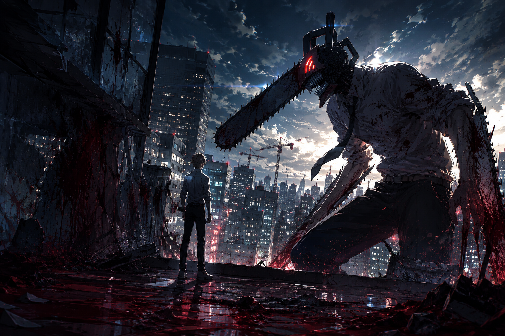

O retorno brutal finalmente chegou ao streaming
Depois de meses de expectativa desde sua estreia nos cinemas, Chainsaw Man - The Movie: Reze Arc finalmente ganhou data oficial para chegar ao streaming.
O filme entrou no catálogo da Crunchyroll em 30 de abril de 2026, marcando um dos lançamentos mais aguardados do ano para os fãs de anime.
Mas o impacto do longa vai muito além da simples estreia em plataforma. O Arco da Reze representa o verdadeiro retorno de Chainsaw Man, a transição da obra para um formato cinematográfico e uma das histórias mais importantes emocionalmente para Denji.
O filme chegou à Crunchyroll com versões legendada e dublada.
Tatsuya Yoshihara dirige o longa com roteiro de Hiroshi Seko.
A continuação do anime foi anunciada na Jump Festa 2025.

O que é o Arco da Reze?
O filme adapta o famoso “Bomb Girl Arc” do mangá de Tatsuki Fujimoto, considerado por muitos fãs um dos melhores momentos de toda a obra.
A história acontece logo após os eventos da primeira temporada do anime. Denji continua preso em sua rotina caótica como caçador de demônios, tentando viver uma vida minimamente normal enquanto encara sentimentos confusos sobre Makima, seus desejos pessoais e sua própria humanidade.
É então que surge Reze: uma garota aparentemente gentil, misteriosa e carismática que entra na vida de Denji de maneira inesperada. E é justamente aí que Chainsaw Man começa a mudar completamente de tom.
- O verdadeiro retorno de Chainsaw Man
- A transição da obra para o formato cinematográfico
- Uma das histórias mais importantes emocionalmente para Denji
- Uma nova fase de análises visuais e debates sobre direção
Reze rapidamente se tornou uma das personagens mais marcantes da obra
Poucas personagens chegaram causando tanto impacto quanto Reze. Sua presença mistura romance, mistério, tensão psicológica e perigo constante.
O filme trabalha a personagem de forma extremamente cinematográfica, utilizando silêncios longos, enquadramentos íntimos, luzes urbanas, cenas noturnas melancólicas e uma direção muito mais emocional do que a primeira temporada.
A relação entre Denji e Reze rapidamente se transforma no centro emocional da narrativa. E isso fez o longa explodir em popularidade nas redes sociais.
O lado mais humano de Denji
Um dos maiores méritos do filme é aprofundar algo que sempre esteve escondido dentro de Chainsaw Man: a solidão de Denji.
Por trás de toda a violência exagerada e do caos absurdo da obra, existe um protagonista desesperado por conexões humanas reais.
Reze aparece justamente em um momento onde Denji está emocionalmente vulnerável, questiona sua própria felicidade e começa a perceber que talvez esteja sendo usado por todos ao seu redor.
O simbolismo de Reze na vida de Denji
- A possibilidade de uma vida normal
- Um futuro comum
- Um relacionamento real
- Uma felicidade que não esteja ligada apenas à sobrevivência
O filme transforma isso em algo muito mais dramático e intimista do que muitos esperavam.
A direção cinematográfica virou assunto na comunidade
Desde sua estreia nos cinemas, o longa virou referência quando o assunto é direção visual em anime.
Grande parte da comunidade começou a destacar o uso de iluminação cinematográfica, a composição das cenas, o realismo urbano, o trabalho de câmera e a atmosfera melancólica constante.
Muito além da ação
Apesar das lutas absurdas e da brutalidade visual, o filme funciona principalmente porque entende perfeitamente seus personagens.
No fundo, Reze Arc é uma história sobre liberdade, manipulação, carência emocional e pessoas tentando encontrar algum sentido em um mundo completamente quebrado.
MAPPA elevou ainda mais o nível visual
O estúdio MAPPA já havia impressionado na primeira temporada de Chainsaw Man, mas o filme levou a produção para outro nível.
As cenas de ação apresentam animações extremamente fluidas, impacto físico pesado, uso intenso de partículas e iluminação, além de uma violência ainda mais brutal.
Ao mesmo tempo, o longa também desacelera quando precisa. E é justamente esse contraste entre violência extrema e silêncio emocional que faz o filme funcionar tão bem.
O sucesso absurdo nos cinemas
O filme foi um enorme sucesso mundial. Segundo cobertura da GamesRadar, Reze Arc ultrapassou US$ 174 milhões em bilheteria global, se tornando um dos filmes de anime mais comentados do período recente.
O impacto foi tão grande que muitos fãs passaram a tratar o Arco da Reze como o verdadeiro divisor de águas de Chainsaw Man.
A internet transformou o filme em fenômeno
Após a chegada do longa ao streaming, as redes sociais foram inundadas com cortes cinematográficos, threads explicando simbolismos, análises quadro a quadro e discussões sobre a direção do filme.
O visual de Reze Arc rapidamente virou referência estética dentro da comunidade anime. Muitos fãs passaram a comparar o longa com produções cinematográficas live-action devido ao cuidado com fotografia, ritmo, som ambiente e construção emocional das cenas.
O futuro de Chainsaw Man
O filme também prepara terreno para o próximo grande arco da franquia: o arco dos Assassinos Internacionais.
A expectativa agora é enorme para a continuação do anime, especialmente após o sucesso gigantesco do longa. A sensação geral é que Chainsaw Man finalmente consolidou sua identidade audiovisual definitiva. E o Arco da Reze foi o responsável por isso.
Onde assistir
Chainsaw Man - The Movie: Reze Arc está disponível oficialmente na Crunchyroll em versões legendada e dublada desde 30 de abril de 2026.
Conclusão
O Arco da Reze não é apenas um filme de anime. É o momento em que Chainsaw Man deixa de ser apenas caótico e se transforma em algo muito mais profundo.
Uma mistura de romance, tragédia, violência e vazio emocional construída com uma direção cinematográfica impressionante.
E talvez seja justamente isso que torna o filme tão especial. Porque no meio de todo o sangue, explosões e demônios, Chainsaw Man ainda consegue falar sobre algo extremamente humano.